➕ Add Custom Stop
✈️ Arrival Night (Oct 23)
Right after dropping bags at Tianzi Wharf.
19:00
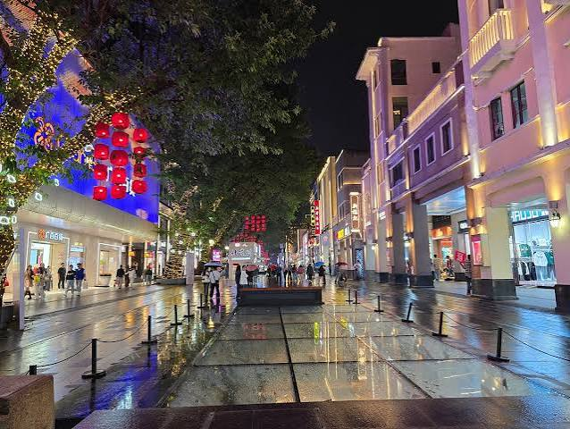
20:30
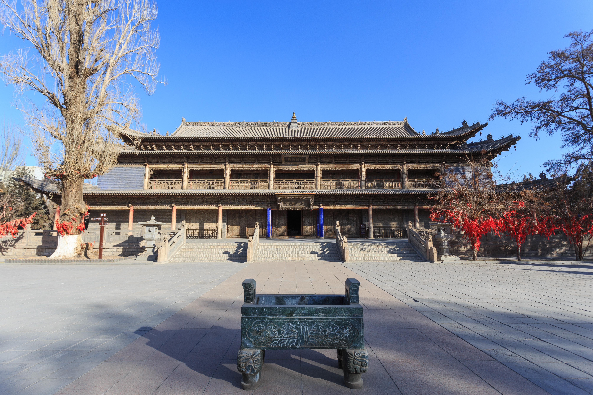
Day 1 — Classical Guangzhou & Xiguan
Focus: Deep history, ancestral halls, and walking historic neighborhoods.
09:00
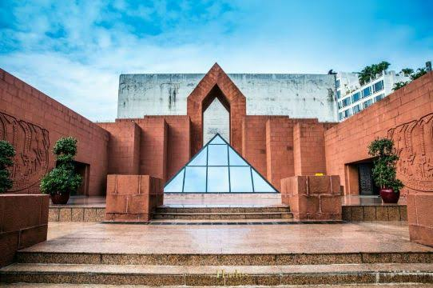
11:00
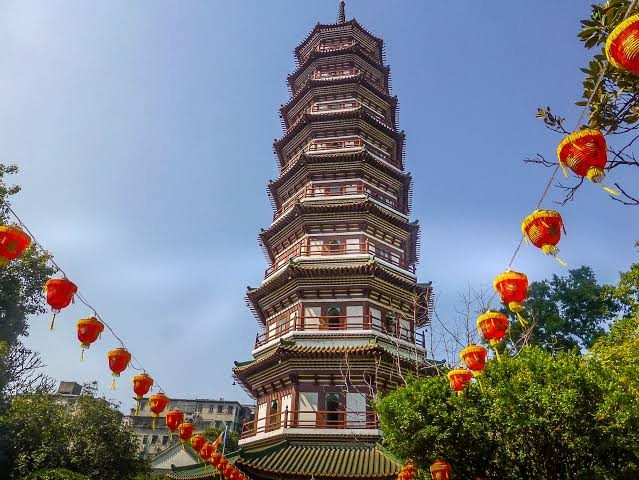
11:50
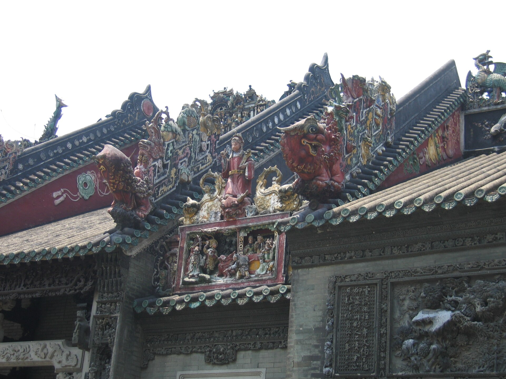
12:45
Lunch Time
14:00
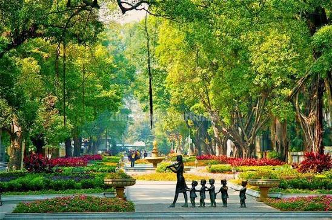
15:30
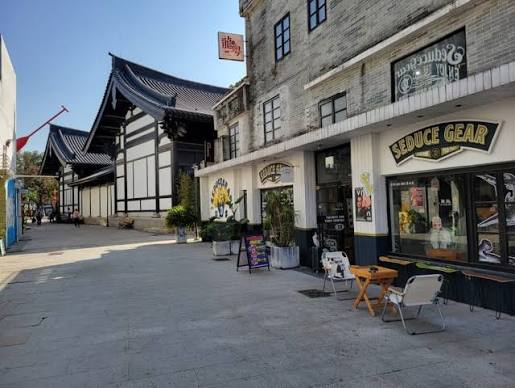
18:00
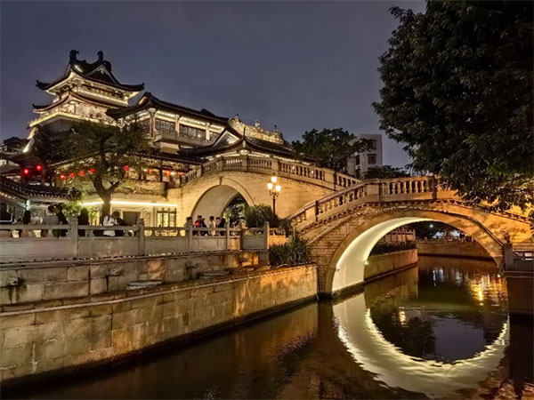
19:30
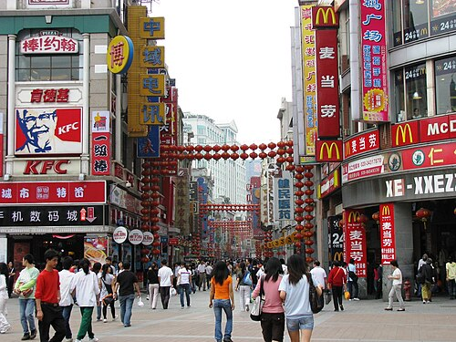
🍽️ Day 1 Lunch / Food Ideas (Xiguan Area)
- Yinji Changfen (银记肠粉): A local staple since the 50s. Great for fast, cheap, delicate soy sauce beef rice noodle rolls and Tingzai (boat) porridge.
- Panxi Restaurant (泮溪酒家): Near Pantang Village. Famous for traditional dim sum inside a beautiful classical Lingnan garden setting.
- Snack Stalls on Shangxiajiu: Perfect for evening grazing (fish balls, radish offal, double-skin milk).
Day 2 — Modern Skyline & Pearl River
Focus: Futuristic CBD, Museums, and River views.
09:30
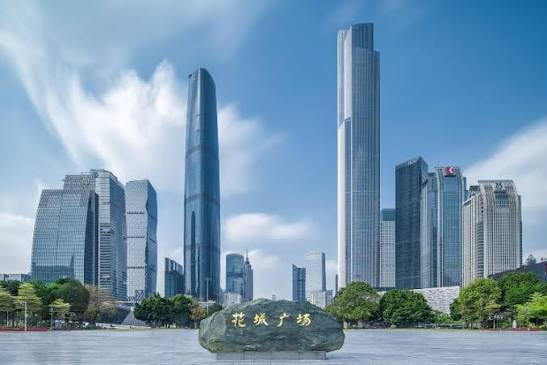
10:30
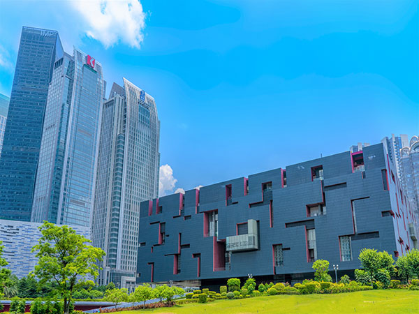
13:00
Lunch Time
14:30
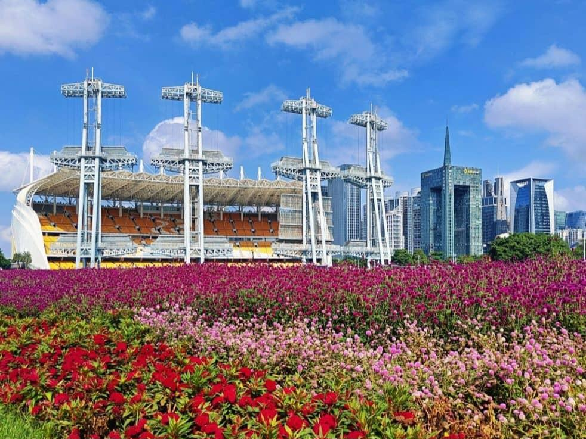
16:30
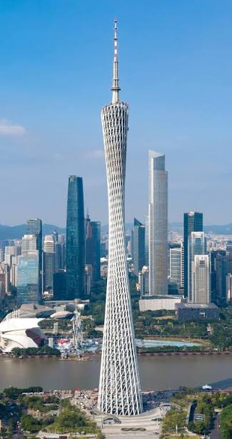
19:30
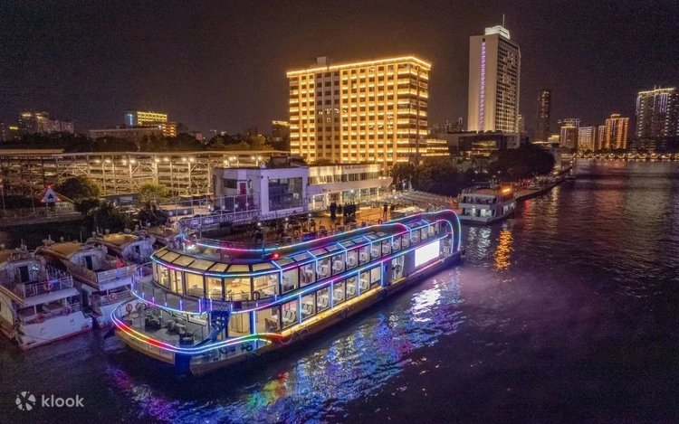
🍽️ Day 2 Lunch / Food Ideas (CBD / Zhujiang)
- Mall of the World (花城汇): A massive underground labyrinth directly beneath the plaza. Contains hundreds of quick dining options, food courts, and cafes.
- Bingsheng Taste (炳胜品味): A short ride away. Highly famous for premium Cantonese roast goose and crispy pork belly.
Day 3 — Nature & Art
Focus: Nature views and Art Districts.
09:00
13:00
Lunch Time
14:00
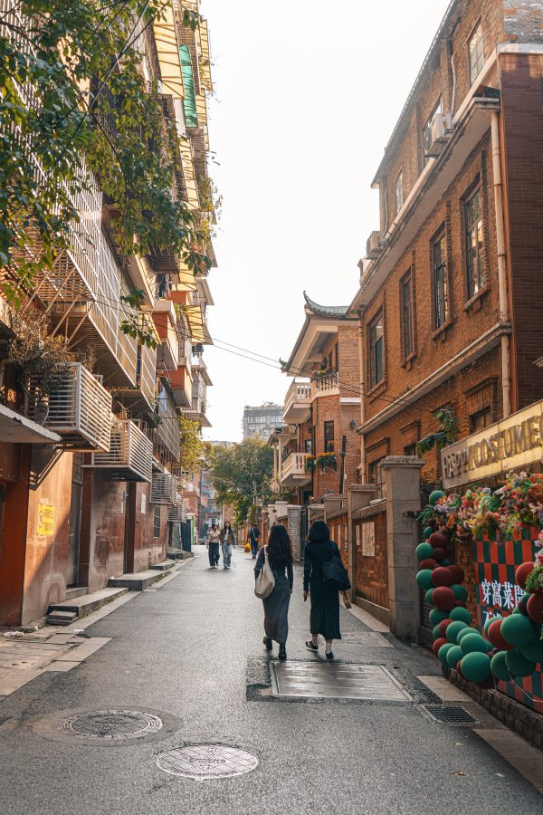
16:30
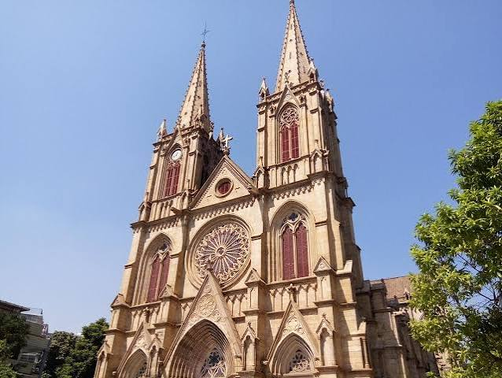
🍽️ Day 3 Lunch / Food Ideas (Dongshankou & Yide Rd)
- Dongshankou Cafes: Skip heavy meals here and enjoy western-style brunch, pastries, and artisanal coffee in one of the many repurposed red-brick mansions.
- Local Noodle Shops: Explore the small alleys surrounding the Sacred Heart Cathedral for authentic local wonton noodles.
💰 Expense Tracker
Track group spending here.
TOTAL: ¥0.00